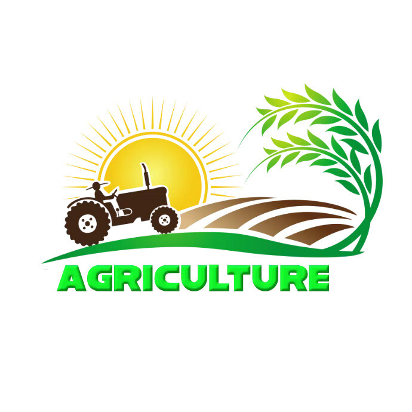

About the Smart Irrigation Advisory SystemSystem Objectives
The primary objective of this system is to optimize agricultural water usage through automated field monitoring. By providing precise, data-driven schedule recommendations, we aim to prevent over-irrigation while ensuring crops receive optimal hydration during critical growth phases.
Additionally, it seeks to promote sustainable farming practices that protect soil quality and reduce overall operational costs for farmers.
System Features
Our system integrates advanced AI algorithms with real-time field sensors to analyze soil moisture, humidity, and local weather forecasts.
Key functionality includes automated irrigation alerts, remote pump scheduling, and precise water calculation metrics (measured in m3). Users receive customized daily advisories highlighted with actionable steps tailored to specific crop types.
How the System Works
The advisory process is streamlined into four continuous automated steps:
Field IoT sensors measure soil moisture & humidity.
AI evaluates weather forecasts & crop growth stage.
Actionable alerts are sent directly to the farmer.
Water pumps execute automated or manual schedules.
System Benefits
Farmers using this platform can expect up to 30% reduction in water consumption and significant savings on electricity bills.
By avoiding crop stress, farmers achieve higher crop yields and maintain healthier soil profiles long-term.
"Precision agriculture powered by AI isn't just about saving water; it's about safeguarding our food security and empowering farmers with the right insights at the right time."
— Dr. A. R. Patil, Senior Agricultural Scientist